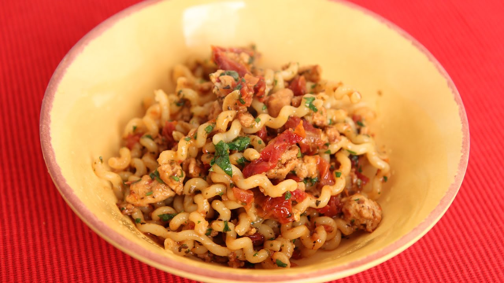

Long Fusilli with Turkey and Sun Dried Tomatoes

Description
Delicious italian dish recipe by Laura Vitale.
Ingredients
- 8oz of Pasta, I like using a long pasta for this
- 8oz of Ground Turkey
- 7 Sun Dried Tomatoes Packed In Oil, finely chopped
- 2 Cloves of Garlic
- ¼ cup of Fresh Basil or a mix of basil and Parsley
- ¼ cup of Grated Parmiggiano (parmesan cheese)
- Salt and Pepper to taste